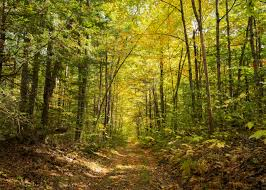

What's your favorite sport?
I like hockey, but I also like soccer. I scored 7 goals at our last soccer practice.

I like hockey, but I also like soccer. I scored 7 goals at our last soccer practice.
Probably going on an adventure in the woods.

Branson was my favorite. They had really good shows and mini-golf.
I think I like the guitar the best since lots of people play it.